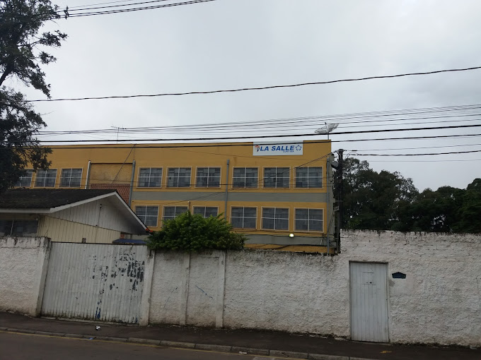
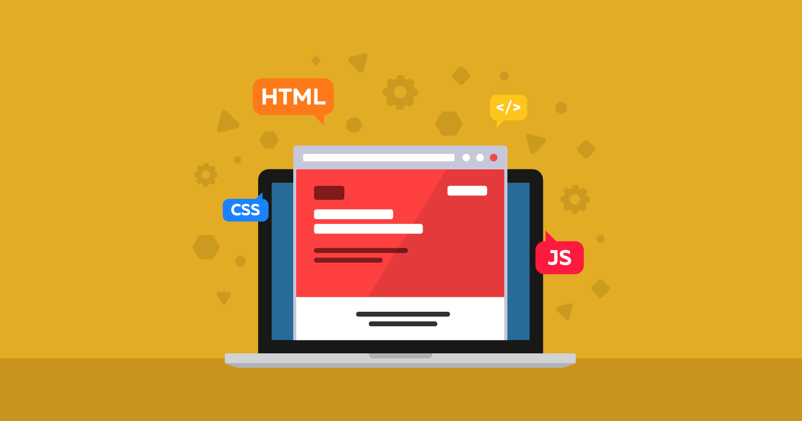

O Colégio Estadual La Salle é uma importante instituição de educação pública, localizada na vibrante cidade de Curitiba, no estado do Paraná. Como uma escola de excelência, ela se dedica a oferecer diversas modalidades de ensino para os alunos. Para os estudantes dos Ensino Fundamental Anos Finais, são disponibilizados os anos do 6º ao 9º, proporcionando uma formação sólida e abrangente. Já para os jovens prestes a ingressar no Ensino Superior, o colégio oferece o Ensino Médio, com foco no preparo acadêmico e pessoal dos alunos, e o inovador Novo Ensino Médio, compreendendo o 1º e 2º ano. Além das aulas regulares, a escola também promove atividades complementares em outros turnos, enriquecendo ainda mais o aprendizado e o desenvolvimento integral dos estudantes. O Colégio Estadual La Salle se destaca como um verdadeiro ambiente de aprendizagem e crescimento, inspirando gerações a trilharem um caminho de sucesso.
Apresentamos orgulhosamente o projeto desenvolvido pelo talentoso aluno Sérgio, da turma 2º G do turno noturno: o site do nosso estimado Colégio Estadual La Salle. Com o objetivo de fortalecer nossa comunicação e proporcionar uma mídia eficiente de divulgação, o site traz informações relevantes sobre nossa instituição de educação pública em Curitiba, Paraná. Vale ressaltar que toda a criação foi realizada por meio das linguagens de programação HTML e CSS, garantindo uma plataforma interativa e atrativa para todos os visitantes. Convidamos você a explorar essa incrível iniciativa que reflete o empenho e dedicação de nossa comunidade educacional.
